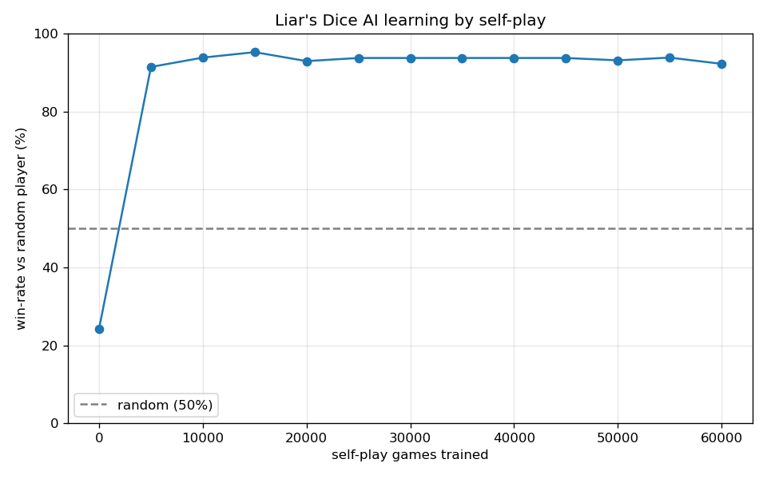

Liar's Dice is a bluffing game of hidden information. We build an AI that starts knowing nothing and learns to play — and bluff — purely by playing against itself.
1. Each player secretly rolls 2 dice.
2. Take turns making a bid — a claim about all 4 dice, e.g. "three fours" = "there are ≥3 fours on the table".
3. Each bid must be higher than the last.
4. Or shout "LIAR!" to challenge. Reveal the dice: if the bid was true, the challenger loses — if it was a bluff, the bidder loses.
You can't see the opponent's dice. So every move is a decision under uncertainty: do I raise (maybe bluffing), or call their bluff? That is exactly the kind of problem reinforcement learning is built for — the same family as Poker.
Learn patterns from data / examples. You show it labelled examples ("this is spam / not spam").
ML done with neural networks — many layers that learn their own features. Great for images, text, audio.
No labelled answers. An agent tries actions, gets a reward, and learns by trial and error what leads to winning.
We combine the last two → Deep Reinforcement Learning
A neural network (deep learning) is the brain, trained by reward from playing (reinforcement learning). No human ever tells it the right move.
| Agent | the AI player (a small neural network) |
| Environment | the dice game + the opponent |
| State | my 2 dice + the bids made so far |
| Action | raise the bid, or call "LIAR!" |
| Reward | +1 if the agent wins the round, −1 if it loses |
| Policy | the learned strategy: given a state → which action |
| Self-play | the agent plays itself thousands of times and improves |
The loop: act → see who won → make winning moves more likely, losing moves less likely → repeat. That single idea (the REINFORCE algorithm) is the whole engine.
The learning, in one line:
The network plays 60,000 games against itself on a laptop CPU in about 30 seconds. We test it against a random player as it learns:
Run it yourself: python train.py

It literally learns to bluff and to catch bluffs — no strategy was ever programmed in.
pip install torch matplotlib
python train.py — trains the model
python app.py — starts the game
open http://localhost:8000
The browser shows the dice, your legal bids, and a live "what the AI is thinking" panel with its probabilities.
• Deep RL = neural network + reward.
• Self-play creates a training partner out of thin air.
• With the right reward and enough games, an agent discovers strategy — even bluffing — on its own.
• The same recipe scales up to Chess, Go, Poker and beyond.
🎲 Your move — can you out-bluff a network that has played 60,000 games?